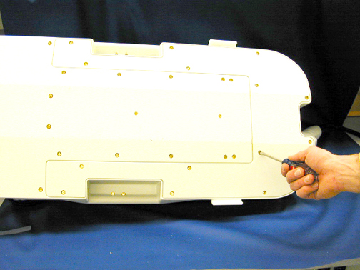
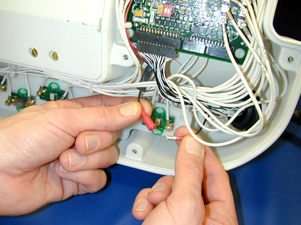
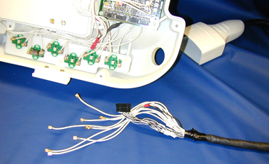
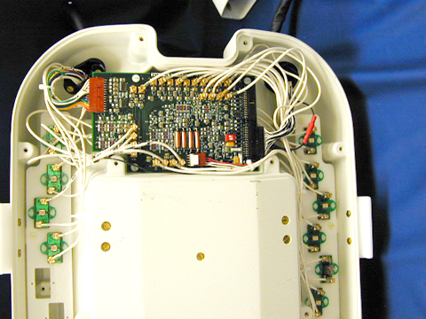

Operating Documentation
Direction 5440001-3, Rev# 6
Signa HDxt Service Methods
Module Version 2.0, Version Date 5/18/09
Operating Documentation |
| Required Persons | Preliminary Reqs | Procedure | Finalization |
|---|---|---|---|
| 1 | 30 mins |
Follow this process to replace the cable assembly on the 1.5T Neurovascular Array by Medrad (M3087JJ).
| Item | Qty | Effectivity | Part# | Manufacturer | |
|---|---|---|---|---|---|
| 5117092-3: 1.5T NV Array Cable | 1 | - | - | - | |
Loosen the cable Strain relief retaining nut from the external cable. See Illustration 1.
Illustration 1: External Cable's Retaining Nut Location

Lay the NVA HD on its side and remove the 14 screws holding the base cover on the unit as shown in Illustration 2.
Illustration 2: Location of Screws on Base Cover

Disconnect the cable shield lug from the system shield wire as shown in Illustration 3.
Illustration 3: Disconnecting the Cable Shield Lug

Disconnect the signal harness from the multiplexer board. See Illustration 4.
Illustration 4: Location of Signal Harness

Disconnect the coax cables from the multiplexer board. See Illustration 5.
Illustration 5: Disconnecting Coax Cables

Remove the strain relief retaining nut and remove it from the cable assembly. See Illustration 6.
Illustration 6: Removing the Strain Relief Retaining Nut

Remove the cables and strain relief from the base of the NVA HD. See Illustration 7.
Illustration 7: Removing Cables and Strain Relief from the Base

Remove the strain relief seal ring from the body of the strain relief. See Illustration 8.
Illustration 8: Removing the Strain Relief Seal Ring

Remove the coax cables from the body of the strain relief followed by the signal wires. See Illustration 9.
Illustration 9: Removing Strain Relief from Cable

Remove the strain relief seal and the strain relief-retaining nut from the cable. See Illustration 9.
Slide the strain relief-retaining nut over the replacement cable followed by the strain relief seal, and then the strain relief body. See Illustration 10.
Illustration 10: Putting the Strain Relief Parts on the Replacement Cable
Insert the cable assembly beginning with the signal wire connector followed by the coax cables through the NVA base. Slide the cable-retaining nut over the cables and secure as shown in Illustration 11.
Illustration 11: Attaching Cable to the NVA Base
Connect the corresponding coax cables to the multiplexer board. See Illustration 12.
| NOTE: | The cables are marked for proper placement. |
| Wire Color | Channel |
| White | 1 |
| White/Black | 2 |
| White/Red | 3 |
| White/Green | 4 |
| White/Orange | 5 |
| White/Blue | 6 |
| White/Brown | 7 |
| White/Yellow | 8 |
Illustration 12: Connecting the Coax Cables
Connect the signal harness connector to P2 of the Base Mux. See Illustration 13.
Illustration 13: Connecting Cable Harness

Connect the cable shield lug to the system shield wire as shown in Illustration 14.
Illustration 14: Connecting the Cable Shield Lug
The final assembly should look like the image shown in Illustration 15.
Illustration 15: Final Assembly

Tighten the cable strain relief retaining nut to the external cable. See Illustration 16.
Illustration 16: Securing the External Cable
Replace the base cover and the 14 retaining screws. See Illustration 17.
Illustration 17: Replacing the Base Cover

No finalization steps.